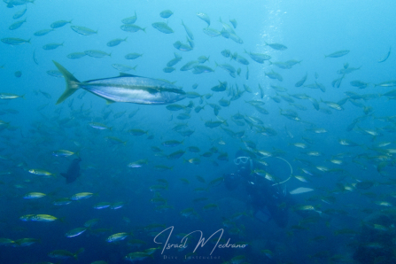
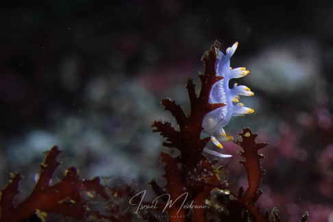

Puntos de buceo
Algunos puntos de buceo cerca de Tokio

Kawana – Izu
Un punto costero accesible y muy versátil, perfecto para buceos tranquilos. Famoso por su increíble biodiversidad macro: nudibranquios, peces rana y camarones. Fondos rocosos volcánicos con arena negra y pequeñas paredes. Ideal tanto para fotógrafos como para buceadores de todos los niveles. Un lugar excelente para descubrir la riqueza del buceo local japonés.

Atami – Izu
Un destino que destaca por su comodidad y encanto, combinando la belleza de un pueblo costero tradicional con una logística de fácil acceso desde la ciudad. Sus fondos de roca volcánica crean un relieve submarino fascinante, donde la geología del Pacífico se muestra en todo su esplendor. Es un lugar que sorprende por su tranquilidad bajo el agua, permitiendo disfrutar de paisajes dominados por grandes colonias de corales blandos que tapizan las estructuras rocosas con tonos blancos y vibrantes.

Izu Oceanic Park – Izu
Considerado por muchos como la meca del buceo en la península de Izu. Este parque marino ofrece una infraestructura impecable y un fondo submarino espectacular que mezcla grandes bloques de lava con cañones profundos. Su biodiversidad es asombrosa, con estaciones de limpieza, tortugas y una explosión de vida que cambia drásticamente con las estaciones.

Yawatano – Izu
Un rincón pintoresco que destaca por su facilidad de acceso y sus aguas generalmente protegidas. El fondo de arena blanca contrasta con los arrecifes rocosos, creando el hábitat perfecto para rayas y una gran comunidad de peces locales. Es un punto de buceo muy equilibrado, ideal para disfrutar de la calma submarina y observar el comportamiento natural de las especies.

Osezaki – Numazu
Situado en la base del Monte Fuji, es uno de los puntos de buceo más icónicos y protegidos de todo Japón. Gracias a su ubicación en la bahía de Suruga, es posible avistar especies de aguas profundas que suben a la superficie. Sus aguas calmadas, casi como una piscina natural, esconden una densidad de vida micro que lo convierten en un destino de culto.